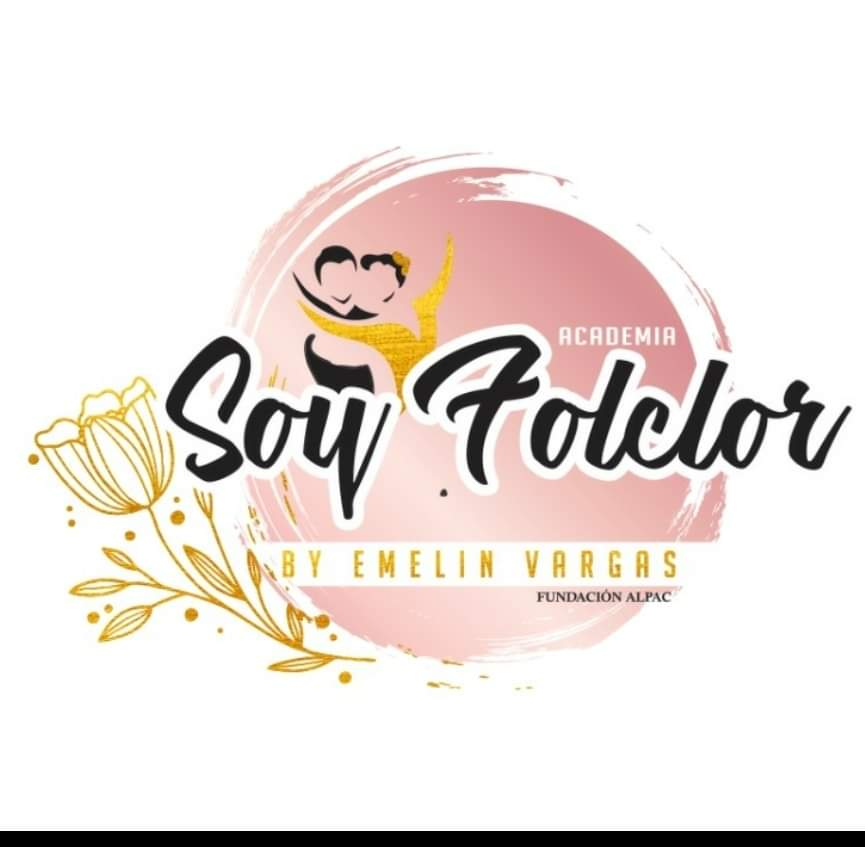
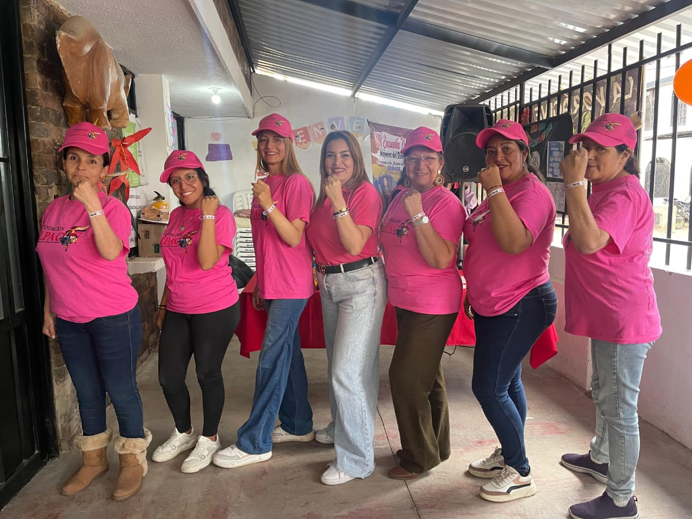
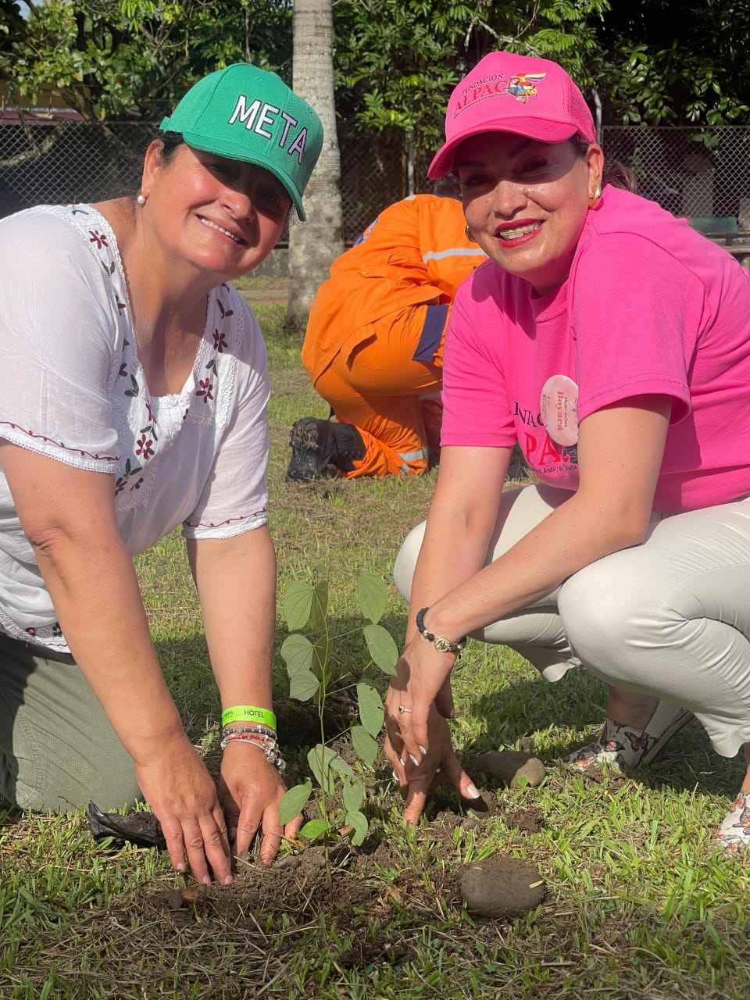

Amigos Luchando por el Arte y la Cultura
La FUNDACIÓN CULTURAL Y MUSICAL ALPAC tiene como objetivo principal, el trabajar día a día en pro de la cultura, el medio ambiente, la historia y tradición del pueblo Colombiano, mediante actividades culturales, sociales y de protección ambiental que fortalezcan nuestra identidad e idiosincrasia, en busca de mantener, conservar y enaltecer el folclor, los recursos naturales, costumbres y tradiciones orales y escritas, para que las nuevas generaciones preserven el sentido de pertenencia y amor por lo nuestro, realizando o apoyando proyectos sociales, ambientales y culturales, presentados por poblaciones u organizaciones comunitarias de grupos de primera infancia, tercera edad, jóvenes, mujeres y colectivos sociales en abandono, discapacidad y cualquier tipo de situación que vulnere su integridad, canalizando recursos humanos, económicos, técnicos, materiales, etc., de entes públicos y privados de nivel regional, departamental, nacional e Internacional.
Diseño implementación, gestión, desarrollo, evaluación y seguimiento de programas y proyectos que aporten al desarrollo humano de los sectores poblacionales, víctimas del conflicto armado en Colombia y en general, en beneficio de niños, niñas, adolescentes, jóvenes y adultos en situación de vulnerabilidad con deficiencia, accesos a estándares de calidad de vida y dignidad, en el marco del respeto de todos sus derechos.
Ser reconocida en el año 2025 en la gestión, promoción y divulgación de los Derechos Humanos, al igual que resaltando y manteniendo las tradiciones y costumbres de nuestra patria para el aprovechamiento de las nuevas generaciones a través de programas y proyectos estratégicos integrales, sirviendo con excelencia a las víctimas del conflicto Armado y en general a toda Colombia y demás población vulnerable.
Valoramos la dignidad de cada persona y reconocemos sus derechos, opiniones y diferencias. El respeto es la base de nuestras relaciones internas y externas, creando un ambiente de confianza, cooperación y empatía.
Creemos en la fuerza de la unión y en la importancia de tender la mano a quienes más lo necesitan. La solidaridad guía nuestras acciones, promoviendo el apoyo mutuo y la construcción de una comunidad más justa y equitativa.
Actuamos con claridad y honestidad en todas nuestras decisiones, procesos y manejo de recursos. La transparencia es fundamental para generar confianza entre nuestros beneficiarios, colaboradores y donantes, asegurando que cada acción esté alineada con nuestra misión.
Nos dedicamos plenamente a nuestra causa, trabajando con constancia y responsabilidad para generar un impacto real y sostenible. El compromiso nos impulsa a perseverar incluso ante desafíos, buscando siempre el bienestar de quienes servimos.
Fomentamos un entorno donde todas las personas puedan participar y ser escuchadas, sin distinción de género, edad, origen o condición social. La inclusión refleja nuestro respeto por la diversidad y nuestro deseo de construir oportunidades equitativas para todos.
Buscamos soluciones creativas y efectivas para los retos de nuestra comunidad, adoptando nuevas ideas y tecnologías que nos permitan mejorar continuamente. La innovación nos ayuda a ser más eficientes y a generar un impacto más amplio y duradero.
Nos esforzamos por comprender y sentir las necesidades y experiencias de las personas a las que servimos. La empatía nos permite conectar de manera genuina, ofreciendo apoyo sensible y adaptado a cada situación, fortaleciendo así nuestras relaciones y nuestra labor social.
Asumimos con seriedad las consecuencias de nuestras acciones y decisiones, tanto internas como externas. La responsabilidad nos impulsa a cumplir con nuestra misión, cuidar los recursos que nos son confiados y garantizar que cada proyecto tenga un impacto positivo y duradero.



Tu aporte nos permite transformar vidas a través del arte y la cultura.